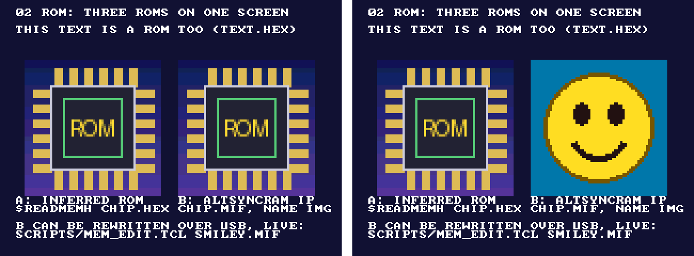

02 · ROM
Put fixed data in the FPGA's block memory: a screen of text and two pictures. Two ways to build a ROM, both in the same design, and one of them rewritten from the PC while the design runs.
The repo keeps the full project (.qar, plus the sources here) but no prebuilt bitstream: one build (a few minutes) makes the .sof on your computer.
What you will see
The screen read back from the board over USB, before and after rewriting ROM B from the PC:

| ROM | Built as | Content | Size |
|---|---|---|---|
| Text | Inferred: Verilog array + $readmemh | assets/text.hex: 40 × 30 characters, one ASCII byte each | 1,200 × 8 bits |
| Picture A | Inferred: Verilog array + $readmemh | assets/chip.hex: 64 × 64 pixels, RGB444 | 4,096 × 12 bits |
| Picture B | Altera altsyncram IP (lib/rtl/rom_ip.v) | assets/chip.mif; named IMG, so it can be rewritten over JTAG | 4,096 × 12 bits |
Block diagram
Two ways to make a ROM
1. Inferred: plain Verilog
reg [11:0] img_a [0:4095];
initial $readmemh("assets/chip.hex", img_a); // path from the Quartus project folder
always @(posedge clk) qa <= img_a[address]; // registered read = block RAMQuartus sees an array that is only read, with an initial $readmemh, and a clocked read: it builds an M9K
block-memory ROM. Portable to any tool, and the same file works in simulation. The read must be clocked; a
combinational read becomes logic instead of memory.
2. The altsyncram IP
rom_ip #(.WIDTH(12), .DEPTH(4096), .AW(12), .INIT_FILE("assets/chip.mif"),
.LPM_HINT("ENABLE_RUNTIME_MOD=YES,INSTANCE_NAME=IMG"))
img_b (.clk(clk), .address(address), .q(qb));lib/rtl/rom_ip.v instantiates Altera's memory block directly (what the IP wizard would write). It gives
full control (memory type, output register) and one feature inference cannot: a name for the In-System Memory
Content Editor, so the PC can read and rewrite the ROM over the USB cable while the design runs.
Timing: the address goes one pixel ahead
A block-memory ROM answers one clock after it gets the address. The screen moves one pixel per clock, so the design
asks every ROM for the next pixel (x + 1); the answer then arrives exactly for the current pixel.
Without this, every picture would be shifted one pixel to the right.
Make your own ROM content
python scripts/img2rom.py my_picture.png assets/my_picture --size 64x64
→ my_picture.hex (for $readmemh), my_picture.mif (for the IP), my_picture_preview.png (in 12-bit colour)Text: write it in assets/screen.txt (up to 30 lines of 40 characters) and run
python examples/02_rom/assets/make_images.py; it writes text.hex and the two pictures.
Rewrite a ROM while the design runs
cd examples/02_rom
quartus_stp -t ../../scripts/mem_edit.tcl list # MEM: index=0 name=IMG depth=4096 width=12
quartus_stp -t ../../scripts/mem_edit.tcl write IMG assets/smiley.mif # picture B changes at once
quartus_stp -t ../../scripts/mem_edit.tcl read IMG out.mif # save what is in it nowThe change lives in the FPGA only: reprogramming or a power cycle brings back chip.mif. To make it
permanent, change the file and rebuild. The same works for RAMs, and it is a quick way to try new pictures, text or
lookup tables without a 2-minute build.
Measured on the board
- Screen read back over JTAG (
python scripts/de10.py screen): text and both pictures exactly as drawn. mem_edit.tcl listfindsIMG, 4,096 × 12, read/write; writingsmiley.mifchanged picture B only (capture above).- Resources: 6,238 logic elements (13 %); memory bits 62 % of which the screen read-back buffer is 56 %. Timing: no negative slack.
Run it
python scripts/de10.py build examples/02_rom
python scripts/de10.py program examples/02_rom
python scripts/de10.py screen logs/rom.png # the screen, read back over USBBuild it yourself
python scripts/new_project.py examples/02_rom rom_top --lib display debug font rom
python scripts/de10.py build examples/02_rom
python scripts/de10.py program examples/02_romTest without the board
python scripts/sim.py examples/02_rom/sim/tb_rom_screen.sv --modelsim
→ 81 checks, 0 errors PASSModelSim, because picture B is the Altera IP; Altera's own simulation model reads the same .mif.
Files
| File | What |
|---|---|
src/rom_top.sv | Display chain, screen, screen read-back |
src/rom_screen.sv | The three ROMs and the colour mux |
assets/ | screen.txt, make_images.py and the generated .hex / .mif / .png |
sim/tb_rom_screen.sv | Unit test (81 pixel checks) |
lib/rtl/rom_ip.v | Reusable altsyncram ROM |
scripts/img2rom.py, scripts/mem_edit.tcl | Image to ROM files; live memory read / write |